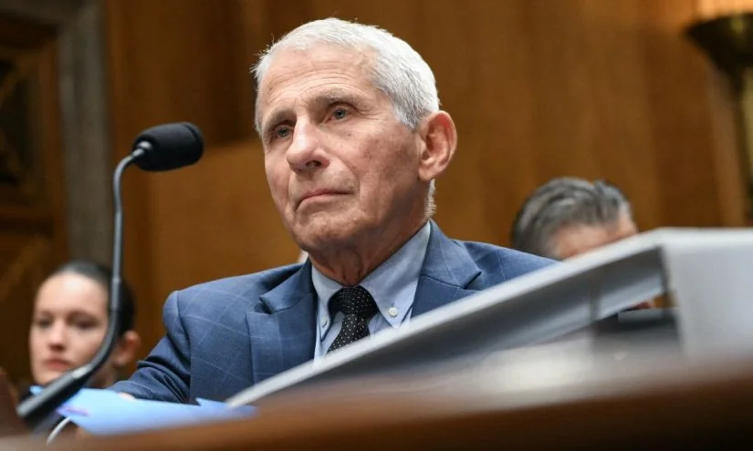

01
高校党建：从“开会”到“督导”的制度化转身
大连理工的一场工作坊，折射出高校基层党建正在从活动化走向流程化。

7月24日，大连理工大学举办了一场名为“一融双高”的基层党建工作坊。名字听起来有点绕，但核心很简单：把党建工作从“开个会、讲个话”变成“有标准、有检查、有反馈”的闭环管理。会议采用集中培训加分组查阅资料的方式，还邀请了基层党建组织员列席指导。会上，党委组织部副部长传达了全国党建工作座谈会精神，巡视组组长则针对巡视中发现的基层党建重点问题做了专题培训。这其实是在搭建一个“发现问题—分析原因—明确规范”的制度框架。对普通人而言，你可能觉得这离自己很远。但高校的党建质量，直接影响到校园治理、师生权益保障，甚至学术风气。当党建变得可量化、可追踪，意味着学校管理会更透明、更负责任。
这场工作坊的背景是，近年来高校党建从“软任务”变成了“硬指标”。过去，一些基层党组织的活动流于形式，比如读文件、拍合影，缺乏实质内容。而现在，通过集中培训、现场查阅资料、专家列席指导等方式，党建工作的每个环节都有了明确要求。比如，会议中特别强调了“树立和践行正确政绩观”，这意味着党建工作不再追求表面热闹，而是注重实际效果。对于学生来说，这种变化可能体现在：党员发展流程更规范、学生党支部活动更有意义、师生诉求反馈渠道更畅通。
当然，制度化不等于完美。督导能否真正发现问题？问题能否被及时整改？这还需要后续的监督和公开。但至少，当党建工作有了可操作的流程和可追溯的记录，它就为问责提供了基础。如果你是一名大学生或家长，可以留意学校是否有类似的公开督导机制——它能间接反映学校的管理水平。比如，学校官网是否定期发布党建工作报告？学生是否被邀请参与评议？这些细节，都是判断一所高校治理能力的重要窗口。
伊恩的观察
如果你是一名大学生或家长，可以留意学校是否有类似的公开督导机制——它能间接反映学校的管理水平。
02
南开校殇日：历史记忆如何成为教育的一部分
89年前的7月28日，南开大学、中学被日军轰炸。每年这一天，南开系列学校都会举行纪念活动。
2026年7月29日，南开大学举行了“校殇日”89周年纪念活动。1937年7月28日，日军轰炸了南开大学、南开中学等学校，校园化为废墟。此后，每年这一天，南开系列学校都会以各种形式纪念。这不是简单的仪式，而是一种历史教育：让学生知道，教育曾经在战火中被摧毁，也曾在废墟上重建。这种记忆的传承，比任何课本都更有力量。它提醒我们，教育的韧性不仅来自制度，也来自一代代人的记忆与坚持。
“校殇日”纪念活动通常包括默哀、回顾校史、师生发言等环节。2026年的活动具体形式虽未详细披露，但根据往年惯例，往往会有老校友或历史学者讲述当年轰炸的细节，以及南开师生如何辗转西南联大继续办学。这种叙事，让学生直观感受到“教育救国”的分量。对于家长来说，这或许是一个启发：带孩子了解自己学校、城市的历史，比抽象的说教更能培养他们的认同感与责任感。
历史教育不必局限于课堂。和孩子一起查阅一所老校的校史，就是一次生动的学习。比如，很多中小学都有百年历史，背后可能藏着抗战、搬迁、重建的故事。家长可以和孩子一起搜索校史资料，或者参观校史馆，让历史从文字变成可触摸的记忆。这种教育，不仅让孩子了解过去，更让他们理解教育本身的价值——它既是文明的传承，也是面对灾难时的希望。
伊恩的观察
历史教育不必局限于课堂。和孩子一起查阅一所老校的校史，就是一次生动的学习。
03
仪器采购论证会：大学资源分配的“透明化”尝试
中国海洋大学召开了一场关于大型仪器设备购置的论证会，看似技术性，实则关乎每个学生的实验机会。
近期，中国海洋大学召开了一场校级集中论证会，讨论相关数量—本年度度大型仪器设备购置库的入库问题。简单说，就是学校要买一批昂贵的实验设备，但钱有限，所以需要专家论证：哪些设备最急需、最能服务教学科研。这种论证会，本质上是资源分配的民主化与科学化。过去，设备采购可能由个别领导拍板，现在则通过集体讨论、公开评议来决定。这对学生意味着什么？意味着你将来做实验时，用到的设备可能经过了更严格的筛选，更贴合实际需求。
大型仪器设备通常价格不菲，从几十万到上千万不等。如果采购不当，不仅浪费资金，还会导致设备闲置或重复购置。中国海洋大学的论证会，正是为了避免这些问题。会议邀请了相关领域的专家，对申报的设备进行逐一评议，从必要性、可行性、共享性等角度打分。最终入库的设备，将优先支持重点学科和公共平台。这种机制，实际上是把有限的资源用在刀刃上。
当然，论证会能否真正避免“人情采购”，还需要后续的监督。但至少，流程的规范化是一个好的开始。如果你在大学里发现实验设备短缺，可以关注学校是否有类似的论证机制，并尝试通过学生渠道反馈需求。比如，向院系或实验室管理部门提出建议，或者参与学生代表会议时提出议题。资源分配透明化，不仅需要制度设计，也需要师生的参与和监督。
伊恩的观察
如果你在大学里发现实验设备短缺，可以关注学校是否有类似的论证机制，并尝试通过学生渠道反馈需求。
04
Fauci听证会：疫情停课的责任究竟该谁担？
美国一场听证会上，福奇援引第五修正案拒绝回答关于学校停课的问题。背后是长达数年的教育损失问责。

7月29日，美国参议院听证会上，前首席传染病专家安东尼·福奇多次援引第五修正案，拒绝回答参议员兰德·保罗关于学校停课和口罩令的问题。保罗指出，福奇在日记中曾夸耀自己在学校关闭中的作用，但听证会上却拒绝回应。这场听证会背后，是数百万美国学生因长期停课而遭受的学习损失。根据多项研究，远程学习导致学生数学和阅读成绩大幅下滑，尤其是低收入家庭和少数族裔学生。福奇是否应该为此负责？这个问题没有简单答案。但听证会本身说明，教育决策的责任链条正在被重新审视。
听证会的焦点在于：福奇作为政府首席医疗顾问，他的建议是否直接导致了学校关闭？保罗认为，福奇在日记中写道“我关闭了学校”，但福奇辩称自己只是提供科学建议，决策权在地方政府。这种争议背后，是一个更深层的问题：当公共卫生危机与教育需求冲突时，谁来做决定？依据什么标准？又如何对后果负责？
对于中国家长来说，这提醒我们：任何关于停课、线上教学的政策，都应该有清晰的科学依据和问责机制。疫情期间，中国也经历了不同程度的停课和线上教学。虽然情况不同，但同样需要反思：决策是否充分考虑了学生的学业和心理健康？是否有数据支撑？当学校做出影响孩子学习的决策时，家长有权了解背后的依据。保持关注、理性提问，是参与教育治理的第一步。比如，可以询问学校：停课的依据是什么？线上教学的质量如何保障？复课后的补偿措施有哪些？这些追问，能推动决策更加透明和科学。
伊恩的观察
当学校做出影响孩子学习的决策时，家长有权了解背后的依据。保持关注、理性提问，是参与教育治理的第一步。
05
教师新模式：让最好的老师带更多的学生
美国新墨西哥州一个学区，用“教师领导”模式让优秀教师指导团队，同时获得更高薪酬。
在Carlsbad学区，9所学校的教师安排被彻底改变：最好的老师不再只教自己的班级，而是成为“教师领导”，负责指导一个教师团队、示范教学，并对团队所有学生的成绩负责。作为回报，他们获得大幅加薪，但不用离开课堂。这种模式叫“机遇文化”，已经运行了四年。它的核心是打破传统“一个老师一个班”的孤立状态，让优秀教师的经验辐射更多学生。同时，通过薪酬激励留住人才。
具体来说，教师领导每周会花部分时间观察同事的课堂，提供反馈，共同备课，甚至直接示范教学。他们不脱离一线，仍然带自己的学生，但同时也承担团队的教学质量责任。这种模式的好处是：优秀教师的经验不再局限于一个班级，而是惠及整个年级甚至学校；年轻教师得到及时指导，成长更快；教师领导获得职业晋升通道和更高收入，而不必离开课堂去当行政人员。
对于中国教育而言，这提供了一个思路：教师专业发展不一定要靠培训讲座，也可以通过校内协作和岗位创新来实现。目前，中国很多学校也有“师徒结对”的做法，但往往流于形式，缺乏明确的职责和考核。Carlsbad的模式则把协作制度化，并和薪酬挂钩。如果你是一位老师，可以思考如何在现有框架内建立同事间的互助小组；如果你是家长，可以支持学校探索类似的协作教学。好的教育模式，往往不是引入全新的东西，而是重新配置已有的资源。教师之间的协作，成本最低、效果最可持续。
伊恩的观察
好的教育模式，往往不是引入全新的东西，而是重新配置已有的资源。教师之间的协作，成本最低、效果最可持续。
无障碍文字记录
伊恩 你好，欢迎来到「伊恩每日·教育」。我是伊恩。今天的故事从大学校园的会议室开始，到美国参议院的听证会，再到新墨西哥州的小学课堂。表面看毫无关联，但背后都指向同一个问题：教育决策如何真正服务学生？我们一个一个来看。
伊恩 7月24日，大连理工大学举办了一场“一融双高”基层党建工作坊，主题是学习贯彻习近平党建思想，压实基层党建责任。会议采用集中培训加分组查阅资料的方式，各二级党组织的党建副职和专兼职组织员参加。这看起来是高校内部管理动作，但放在教育生态里看，高校党建的规范化和督导，直接影响着大学治理的透明度和执行力。对师生来说，一个运转有序的行政系统，至少能减少“盖章跑断腿”的消耗。
“一融双高”指的是党建与业务深度融合，以高质量党建引领高质量发展。这次工作坊由党委组织部主办、生物工程学院承办，还邀请了基层党建组织员列席指导。会上，党委组织部副部长庞源传达了全国党建工作座谈会精神，部署了学习贯彻习近平党建思想的要求，并提示暑假期间开展树立和践行正确政绩观的学习教育。党委巡视办公室专职巡视组组长郈兵作了专题培训，聚焦本轮校内巡视中发现的基层党建重点问题，剖析深层次原因，明确了工作规范和要求。
这个事件对谁有影响？首先是高校行政人员和党务工作者。他们需要更规范地执行党建任务，这意味着更多培训和检查，但也可能带来更清晰的流程和更少的模糊地带。其次是学生和教师。虽然他们不直接参与会议，但党建工作的质量会间接影响校园治理。比如，一个高效的党组织能更快响应师生诉求，推动教学改革或科研支持。反过来，如果党建流于形式，就可能增加行政负担，让师生感到“被折腾”。
从利弊来看，好处是明确的：通过督导和培训，可以提升基层党组织的战斗力，减少“两张皮”现象——即党建和业务脱节。但潜在风险是，如果过度强调形式合规，比如材料准备、会议记录等，可能让基层陷入“台账主义”，反而消耗精力。关键在于，督导是否真正聚焦问题解决，而不是检查痕迹。
对于普通人，比如学生或家长，你可能觉得高校党建离自己很远。但想想看：大学里的奖学金评定、课程改革、科研项目申报，背后都有党组织的决策和协调。一个运转有序的党建系统，能让这些流程更透明、更高效。比如，如果党组织能真正推动“我为群众办实事”，那么学生反映的宿舍维修、选课系统卡顿等问题，就可能更快得到解决。
长期来看，高校党建的规范化有助于教育公平。因为当大学治理更透明、更高效时，资源分配就更可能基于规则而非关系。这对普通家庭的孩子尤其重要——他们更依赖制度保障，而不是人情网络。当然，这需要党建真正“实”起来，而不是“秀”出来。
所以，当你看到这类新闻时，不妨多问一句：这次会议之后，师生能感受到什么变化？如果只是多了一堆文件，那就值得警惕；如果确实推动了问题解决，那才是真正的价值。作为教育生态中的一员，你可以通过学生代表、教师座谈会等渠道，反馈真实需求，让党建督导不只是自上而下的检查，更是自下而上的改进。
听众 伊恩，党建督导会跟普通学生有什么关系？感觉离我很远。
伊恩 你问得很实在。直接关系确实不明显，但间接影响是存在的。高校党建督导的核心是压实责任——包括对意识形态工作、学生思政教育、师德师风的管理。当这些制度被认真执行，你遇到的辅导员会更负责，课程思政不会流于形式，校园里的形式主义会减少。换句话说，一个好的治理体系，最终保护的是学生的时间和发展机会。
伊恩 今天想和你聊一个不太一样的话题。7月29日，南开大学举行了“校殇日”89周年纪念活动。1937年的同一天，日军轰炸了南开大学、中学和小学，南开系列学校成为抗战中第一所被整体摧毁的学校。这个事件不涉及具体的升学政策或课改方案，但它提醒我们一个容易被忽略的前提：教育公平和国家主权、和平环境密不可分。
你可能觉得，和平年代谈这些有点远。但仔细想，我们今天能讨论学区房、教师薪酬、课后服务，恰恰是因为我们拥有一个稳定的社会环境。而南开“校殇日”的纪念，本质上是在提醒：教育是民族的根脉，一旦根脉被毁，恢复需要几代人的努力。
从教育公平的角度看，战争对教育的破坏是最极端的“不公平”——它让所有孩子同时失去受教育的权利，无论贫富。二战期间，欧洲许多国家的学校停课，战后重建教育体系花了十多年。而南开在轰炸后辗转迁校，坚持办学，这种韧性本身就是一种教育。
对我们普通人来说，这个纪念日的意义不在于记住仇恨，而在于珍惜当下。如果你是一名学生，可以想想每天坐在教室里听课、和同学讨论问题的机会，其实并非理所当然。如果你是一名家长，或许可以少一些对分数和排名的焦虑，多一些对教育本质的思考——教育首先是培养一个完整的人，而不是制造考试机器。
长期来看，教育公平的推进需要和平作为基石。没有和平，再好的政策、再多的资源都无从谈起。所以，当我们在为“双减”效果争论、为教师待遇呼吁时，不妨偶尔停下来，想想那些在战火中失去校园的孩子。他们的失去，提醒我们拥有的可贵。
今天的内容可能有些沉重，但我觉得它值得被记住。教育不只是关于分数和升学，更是关于文明的延续。希望你能带着这份底色，更清醒地看待每一天的学习和成长。
听众 纪念历史对现在的教育有什么实际意义？会不会只是仪式感？
伊恩 仪式感本身就有意义——它让集体记忆不褪色。但更重要的是，南开“校殇日”背后是“教育救国”的精神。今天很多家长焦虑的“起跑线”，和当年连学校都没有的困境相比，是两种截然不同的稀缺。理解历史能帮我们校准焦虑：我们抱怨的“卷”，其实是教育资源丰富后的竞争，而不是生存危机。这种认知转换，能让你在育儿和成长中多一份从容。
伊恩 中国海洋大学在7月29日召开了一场校级集中论证会，讨论的是2027-2028年度大型仪器设备购置库的入库问题。你可能觉得这离自己很远，但大型仪器共享水平直接关系到研究生和科研人员的实验效率。如果论证充分，学生能用上更先进的设备；如果论证走形式，可能造成资源浪费。这是高校资源配置的一个缩影。
大型仪器设备，比如电子显微镜、核磁共振仪、超算中心，单价动辄几百万甚至上千万。一所大学购置什么、不购置什么，背后是学科布局、科研方向和经费分配的博弈。中国海洋大学作为以海洋和水产为特色的高校，它的仪器采购必然优先服务海洋科学、水产养殖、环境工程等优势学科。但问题在于：这些设备买回来之后，谁用？怎么用？
现实中，很多高校的大型仪器存在“重采购、轻共享”的问题。有的实验室把设备锁在房间里，只有本课题组能用；有的设备买回来几年，利用率不到30%；还有的设备因为缺乏维护经费，早早成了摆设。这不仅是浪费纳税人的钱，更直接伤害了学生的科研体验——你排了三个月的队，结果机器坏了；你导师申请不到机时，实验只能一拖再拖。
中国海洋大学这次论证会，如果真能落实“共享优先”原则，对普通研究生和年轻教师是利好。比如，建立校级共享平台，预约系统透明，机时分配按学术价值而非资历排序，甚至对跨学科用户给予优惠。这样，一个做海洋微生物的学生，也能用上材料学院的透射电镜；一个搞渔业资源的学生，也能调用超算中心的算力。
但风险也存在。论证会如果只是走过场，变成“谁嗓门大谁拿设备”，或者被行政力量主导，那最终买单的还是学生。更隐蔽的代价是：当学校把大量经费砸在硬件上，用于学生奖学金、助教津贴、学术交流的预算可能被挤压。你可能会发现，实验设备越来越高级，但你的生活补助却没涨。
所以，这件事提醒我们：高校资源配置的公平性，需要被持续监督。作为学生，你可以关注学校是否公开仪器共享数据和利用率报告；作为教师，你可以推动建立跨学科仪器共享联盟。长期看，只有把“买设备”和“用设备”的链条打通，科研效率才能真正提升，教育公平才不会停留在口号上。
中国海洋大学的论证会结果如何，我们拭目以待。但无论结果怎样，它都像一面镜子，照出高校资源分配的真实逻辑。而你能做的，就是保持清醒，用好每一台你争取来的机器。
伊恩 今天我们来聊一个美国教育界正在激烈争论的话题：公共卫生专家到底该不该为学校关闭的后果负责？7月29日，美国参议院听证会上，前首席传染病专家安东尼·福奇博士援引第五修正案，拒绝回答关于学校关闭政策的问题。此前他的日记被公开，显示他曾夸耀自己在推动学校关闭中的作用。听证会上，参议员兰德·保罗指出，福奇虽未亲自下令，但各地官员引用他的权威做出了决定，导致“孩子们失去了数年教育”。福奇则称保罗对他有“unhinged obsession”。
先看事实。福奇在2020年新冠疫情初期，作为白宫疫情应对关键人物，多次公开建议学校关闭以减缓病毒传播。日记显示，他对自己在政策中的影响力感到自豪。但听证会上，他拒绝回答具体问题，理由是可能自证其罪。保罗则强调，福奇利用媒体影响力塑造了公众认知，使各地官员将关闭学校视为唯一科学选择。
那么，学校关闭的代价有多大？多项研究显示，长期远程学习导致美国学生数学和阅读成绩大幅下滑，尤其是低收入家庭和少数族裔学生。心理健康问题激增，辍学率上升。据估计，学习损失可能使一代人未来收入减少数万亿美元。
这件事的核心争议是：公共卫生专家在多大程度上应该为这些后果负责？一方面，专家在危机中提供建议，但决策权在民选官员。另一方面，当专家利用权威压制不同声音，导致单一政策被强制执行时，他们是否应承担道德甚至法律责任？
对普通家庭而言，这意味着什么？首先，家长需要意识到，专家意见并非绝对真理，尤其在涉及儿童长期发展时。其次，政策制定应更透明，纳入教育专家、心理学家和家长的声音。最后，我们每个人都要学会批判性思考，不盲目依赖单一权威。
长期来看，这场争论可能推动美国教育决策机制的改革，比如建立更平衡的咨询委员会，确保儿童福祉不被短期公共卫生目标牺牲。但更重要的是，它提醒我们：教育是复杂系统，任何单一领域的专家都不应垄断话语权。
听众 福奇这件事对我们中国家长有什么启发？我们当时也停课了很久。
伊恩 启发在于：任何重大的教育决策，都需要建立透明的问责机制。当时各国都面临未知病毒，关闭学校是紧急避险，可以理解。但事后必须评估损失——比如学习进度落后、心理健康问题、数字鸿沟。如果决策者永远不需要回答“为什么是这种方案”，那么下一次危机，孩子可能再次成为代价。作为家长，你可以做的是：关注本地教育部门的复盘报告，参与家长委员会，让决策者听到“孩子不能再次牺牲”的声音。
伊恩 最后是一个令人振奋的故事。新墨西哥州卡尔斯巴德学区，12所学校中有9所正在推行一种叫“Opportunity Culture”的教师新模式。他们把最优秀的教师放在团队领导位置，让他们指导同事、示范教学，并对团队内所有学生的成绩负责。作为回报，这些教师领袖获得大幅加薪——而且不必离开课堂。这个模式打破了“当老师要么上课，要么升职做行政”的二元选择。
这个模式的核心是重新定义教师的职业发展路径。传统上，优秀教师只有两条路：要么继续在教室里拿固定工资，要么离开教学岗位去当校长或教研员。但Opportunity Culture创造了一个“第三条路”：教师可以成为“多班级领导者”或“教学教练”，同时保留教学岗位，收入却能显著提升。在卡尔斯巴德，这些教师领袖的薪酬比普通教师高出20%到50%，具体取决于他们负责的团队规模和责任范围。
机制上，每个教师领袖通常带领3到5名同事，每周共同备课、互相观课，并定期分析学生数据。他们不直接管理所有学生，但要对团队内每个孩子的学业进步负责。这意味着，一个优秀教师的影响力不再局限于自己班上的30个学生，而是可以辐射到整个年级甚至全校。
这个模式对普通教师的影响也很实在。年轻教师或教学能力一般的老师，不再需要独自摸索。他们每周都能得到资深同事的现场指导，就像医院里的住院医师跟着主治医生学习一样。对于学生来说，他们接触到的教学方案是由整个团队打磨过的，质量更稳定。
当然，这个模式也有代价。学校需要为教师领袖支付额外薪酬，这通常需要重新分配预算，比如减少行政岗位或调整班级规模。另外，教师领袖的工作强度很大——他们既要教好自己的班，又要指导同事，时间管理是个挑战。卡尔斯巴德学区为此提供了专门的培训，帮助这些教师领袖学会如何高效地观察课堂、给予反馈，而不是简单增加工作量。
从更广的视角看，Opportunity Culture回应了一个长期困扰教育系统的问题：优秀教师的专业能力如何被最大化利用？传统上，教师职业是“扁平化”的——一个教了20年的老师和刚入职的老师，在课堂上的权力和责任几乎没有差别。这个模式通过创造有层级的教学岗位，让经验得以传承，也让优秀教师获得应有的经济回报和职业尊重。
对于关心教育公平的人来说，这个模式尤其值得关注。因为优秀教师往往集中在富裕学校，而Opportunity Culture通过团队协作，让更多学生——包括弱势群体学生——有机会受益于顶尖教师的教学设计。当然，它不能替代系统性资源分配改革，但至少提供了一种在现有条件下提升教学质量的可行路径。
如果你是一位老师，可以思考：你的学校是否有可能尝试类似的“教师领导”角色？如果你是一位家长，可以关注：你孩子的学校是否有机制让优秀教师影响更多班级？教育改进往往不是靠一个英雄校长，而是靠一套让好老师发挥更大作用的制度。
伊恩 今天五个故事，从党建、历史、设备采购到疫情问责、教师创新，看起来散，但有一条暗线：教育系统的健康，取决于每个环节的决策质量。党建督导让治理更规范；校殇日提醒我们珍惜和平；设备论证影响科研效率；疫情问责倒逼决策透明；教师模式创新则直接提升教学质量。作为个体，我们无法控制所有环节，但可以理解它们如何影响自己的处境，并在力所能及的范围内——比如选择学区、参与家校沟通、关注政策——做出更明智的行动。
伊恩 明天，我会继续从教育新闻里，为你拆解那些看似遥远、实则与你息息相关的变化。我是伊恩，我们下次见。